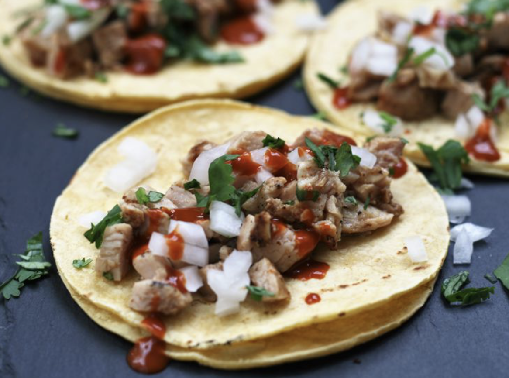

Grilled chicken tacos
Nuestra receta sobrevivir a la familia costa de un plato facil y delisioso donde tal vez no engañes a tu familia con que ya sabes cocinar, pero podras pasar la prueba de ya te puedes cuidar solo.

Ingredientes
- 1 libra de muslos de pollo deshuesados y sin piel, sin exceso de grasa
- 2 cucharadas de jugo de lima recién exprimido
- 2 cucharadas de aceite vegetal
- 2 dientes de ajo, picados
- 1/2 cucharadita de comino molido
- 1/2 cucharadita de cilantro molido
- 1/2 cucharadita de sal
- tortillas de maíz del tamaño de un taco
- 1/3 taza de cebolla blanca picada
Pasos a seguir
Paso 1
- En una bolsa, coloque el pollo, el jugo de limón, el aceite vegetal, el ajo, el comino y el cilantro. Vuelva a sellar la bolsa y masajee la bolsa hasta que el pollo esté cubierto uniformemente. Dejar el pollo 1 a 2 horas en el refrigerador.
Paso 2
- Precaliente un sarten a fuego alto y engrase ligeramente la sarten.
Paso 3
- Ase a fuego directo el pollo hasta que los jugos salgan claros, de 6 a 8 minutos por lado.
Paso 4
- Retirar a un plato y dejar reposar durante 5 minutos. Picar el pollo en trozos pequeños y reservar, manteniéndolo caliente.
Paso 5
- Coloque las tortillas en el sarten caliente, y caliente durante unos 20 a 30 segundos.
Paso 6
- Ponga la mezcla de pollo entre las tortillas. Cubra con cebolla y cilantro si lo desea. Servir con rodajas de lima.